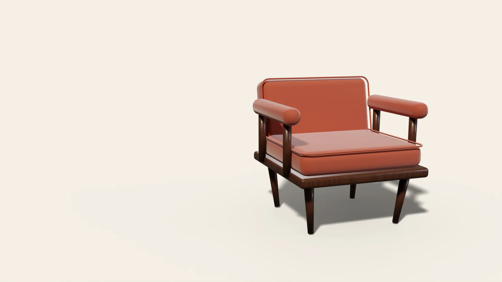
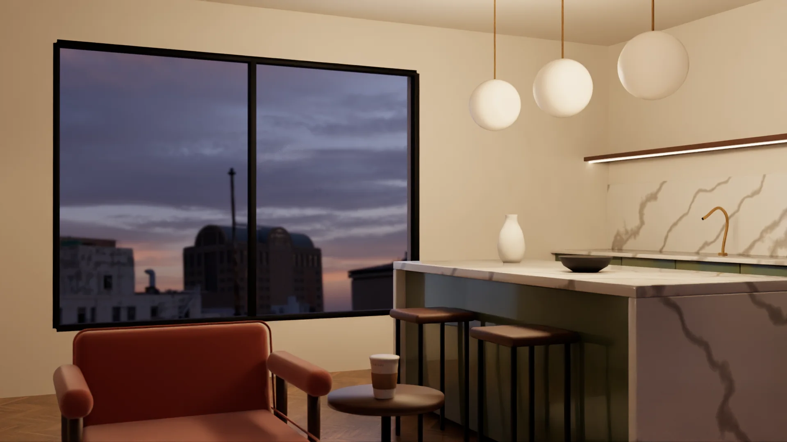
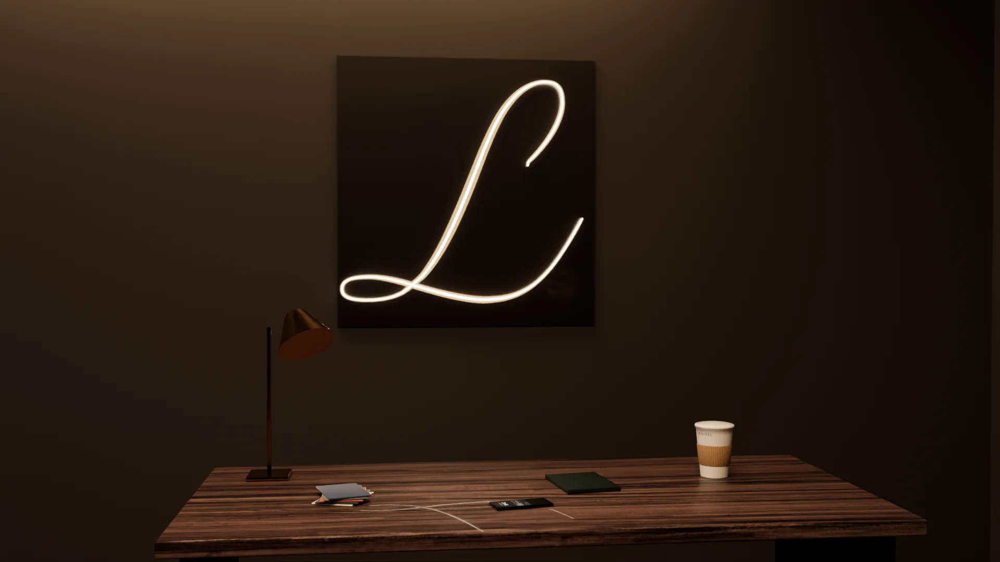

Larisel — 3D & web studio
We turn your product into a film you scroll and 3D you can turn.
Websites for cafés, furniture and interiors — rendered in Blender, built in three.js, and they open on a phone.
01 — Interactive site
Larisel Café. A café you order from.
This chapter is the café's own film, playing from its own site: the coffee is poured, the lid goes on, and the cup becomes the live one below.
01 — Café
Larisel Café
Pick a coffee, design the cup.
A café website that guests use the way they use the counter — and then a little more.
- Design the cupChoose the drink, then the cup's colour, sleeve and lid — and see your name printed on it.
- Order from the tableScan the code on the table, order, and split the bill with friends.
- A coffee readingSend a photo of the empty cup and read what the grounds say.
On the siteA guest designs a cup: ink blue, a copper sleeve, and her name.

02 — Armchair
Larisel Armchair. Built on screen.
A furniture shop's product page where the customer puts the chair together — and sees it before it is made.
Fabric and frame
One tap, a different chair.
Sand to graphite to terracotta, oak to brass to walnut. On the shop's page the chair changes the moment the customer chooses.
02 — Armchair
Larisel Armchair
Build the chair for your own room — the model and the price change as you go.
A furniture product page that sells by letting the customer build the chair.
- Pick the fabricSix colours, from sand to indigo, shown on the chair itself.
- Pick the frame and the sizeOak, walnut, black or brass legs; standard or XL.
- See the price, then orderThe total follows every choice, and one tap sends the build to the workshop.
On the siteThe customer tries colour after colour — the chair and its price change with every tap.

03 — Interiors
Larisel Interiors. The client chooses the room.
A tool for kitchen and interior studios: floor, worktop, fronts and wall colour, changed live while the client stands in the room.
Afternoon to evening
The same kitchen, after sunset.
One switch shows the materials under evening light — before a single panel is ordered.
03 — Interiors
Larisel Interiors
Let the client choose the room.
Instead of sending renders back and forth, the studio sends one link — and the client arrives at the meeting having decided.
- Try the materialsSix floors, six worktops, eight cabinet fronts and eight wall colours.
- See it day and nightThe same kitchen in daylight and with the lamps on.
- Open it anywhereIt runs in the browser, on a phone too; nothing to install.
On the siteThe client tries a walnut floor, a Calacatta worktop and sage fronts — then switches to evening.

04 — Corporate site
Larisel Group. Three sectors, one address.
The website of a group working in retail, construction and energy — one set of pages, three languages.
04 — Corporate site
Larisel Group
Retail. Construction. Energy. One group.
One website for a group of three companies — clear to a customer, an investor and a job seeker alike.
- A page for each companyLarisel Park, Larisel İnşaat and Larisel Enerji, each with its own story and colour.
- Three languagesTurkish, English and Russian from a single set of pages.
- The building, in 3DThe construction page shows the group's project as a model you can turn.
On the siteScrolling the group's homepage: the relief behind the type, the flagship project, the sectors.

05 — Order bot
An order arrives the moment it is placed.
The shop's Telegram bot takes the order, checks every step and sends it to the workshop — the phone on the desk is where it lands.
05 — Order bot
Larisel Order Bot
Choose, confirm, done — inside Telegram.
A Telegram bot that carries a catalogue, a cart and a five-step checkout, with an admin panel and an Excel export behind it.
- Order in a chatNo app to install: the customer orders where they already talk.
- Nothing gets lostEvery step is checked and saved; an order is never half-taken.
- The shop sees it allAn admin panel for the day's orders, and Excel when the accountant asks.
Tap the answers — this is the bot's real flow, played here. Nothing is sent.
How we work
From a call to a site you can scroll.
- A short callFifteen minutes about the product, the audience and the deadline.
- The first frameWithin a week you see the look — the light, the material, one shot — before anything is built.
- Built on your phoneYou follow a live link as it grows, and judge it on your own screen.
- Live, and yoursLaunched on your domain, with the source code handed over.
Start a project
What do you need?
For what kind of business?
Languages
When?
Budget
Your brief
Copied — paste it into the chat.
We answer within a day — with a price.